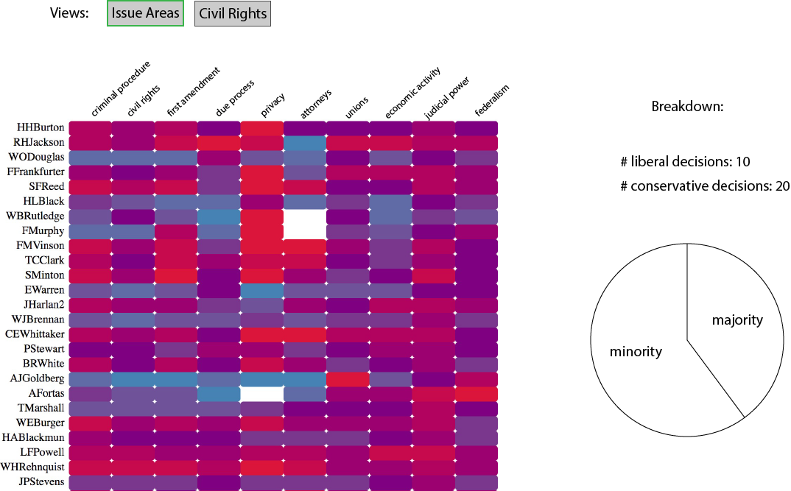
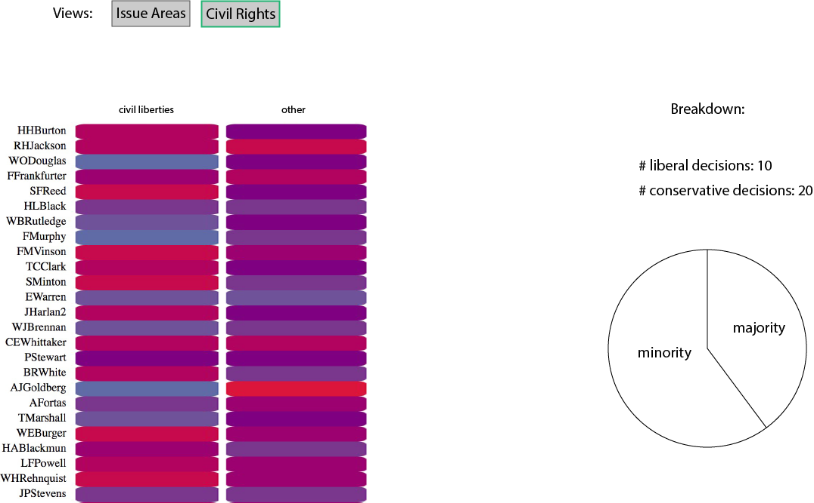

Heatmap
Questions that can be answered:
- Do justices vote differently depending on issue area?
- Do justices vote in the majority/minority more than others?
- Do justices vote in the majority/minority more based on certain issue areas?
Sketch: View 1

Sketch: View 2

Implemented Interactions
- Switch between all different issue areas, or Civil Liberties vs. Non-Civil Liberties
- Show a breakdown of # conservative votes, # liberal votes, and percent of times in the majority or minority, in different ways: When hovering over a justices name, show this info for all of his decisions (across issue areas). When hovering over an individual box, show this info for that justice in that issue area.
Concrete example:
- The user will be presented with a heat map that shows how each justice voted in each issue area.
- If the user hovers over a justice name, a pie chart will show the breakdown of majority/minority votes over all issue areas for this justice
- The user can also hover over a specific box in the heat map to show the breakdown of majority/minority votes for this justice only in this issue area
- A button will also allow the user to cluster the issue areas into two different catagories, civil liberties and other (appearently useful).
Proposed impementation path:
- Start with the heatmap we already have
- Group the data for button functionality (Civil liberties vs not)
- Implement button functionality (using the grouped data)
- Implement hover functionality/pie chart if possible with code we already have